Accueil et navigation lisibles ; la zone de saisie ne montre pas son indication de champ vide.
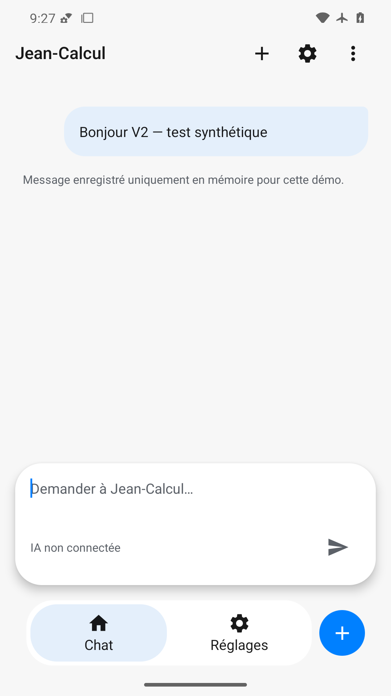
Message, navigation et nouvelle conversation visibles ; indication absente dans le champ vide après envoi.
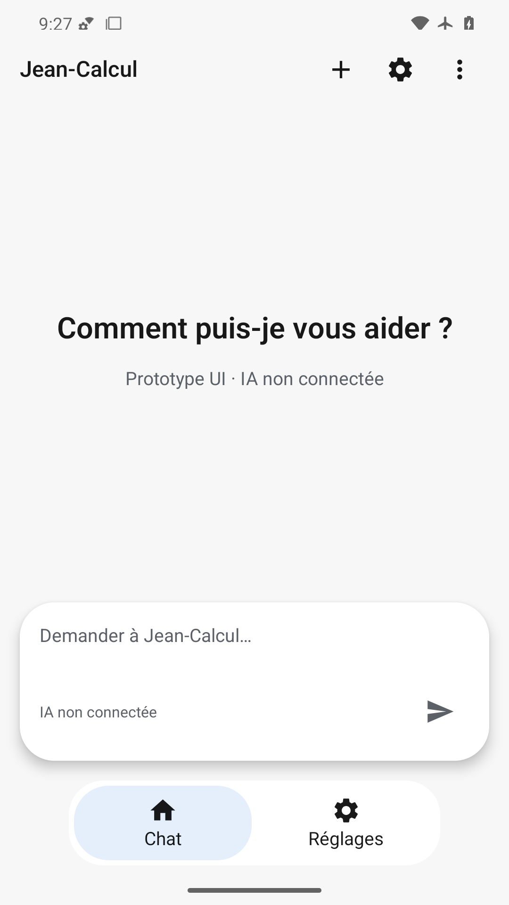
Accueil restauré sans message, indication de saisie et destinations complètes visibles.
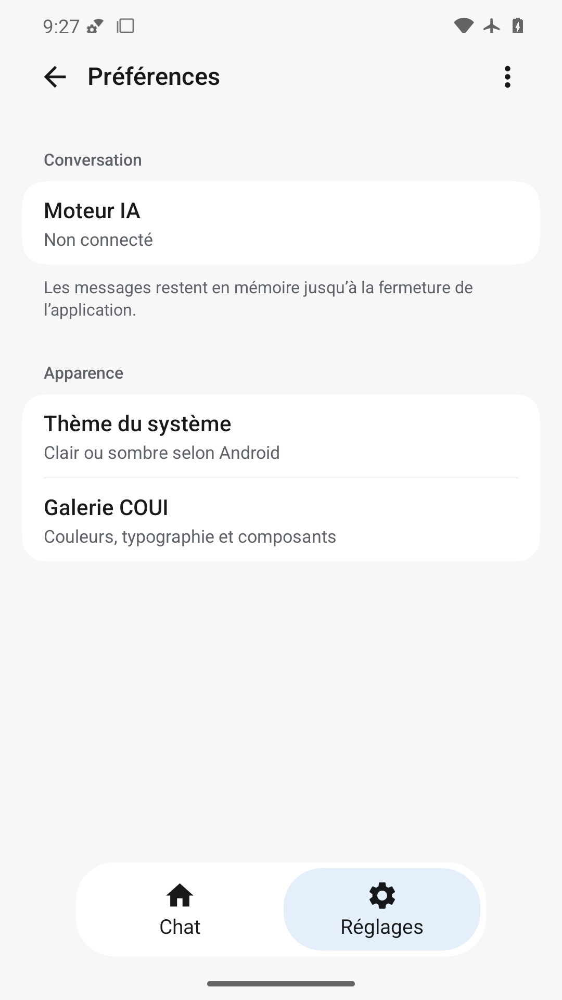
Préférences et résumés lisibles ; onglet Réglages et icônes complets.
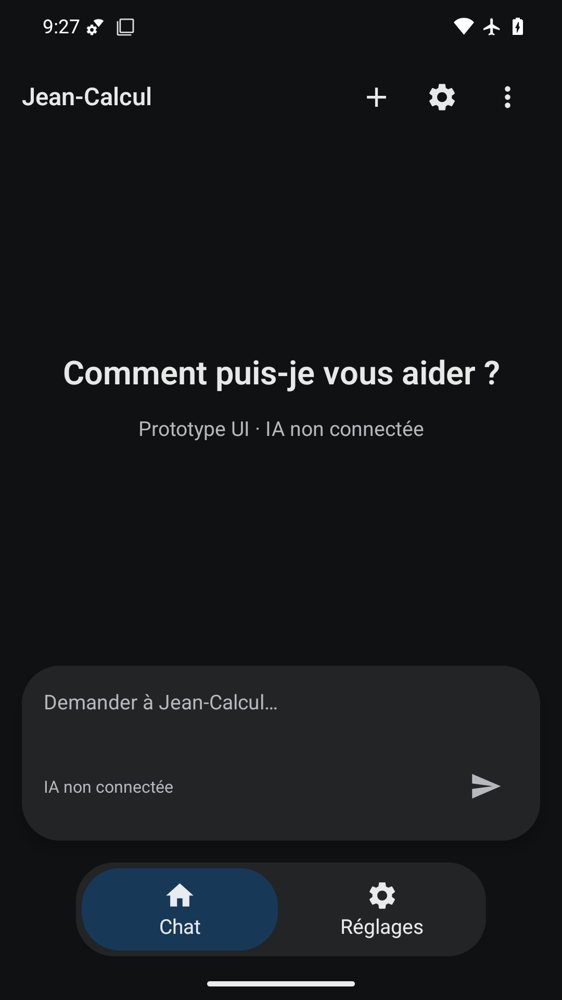
Palette sombre lisible, indication du champ et navigation complètes, statut contrasté.
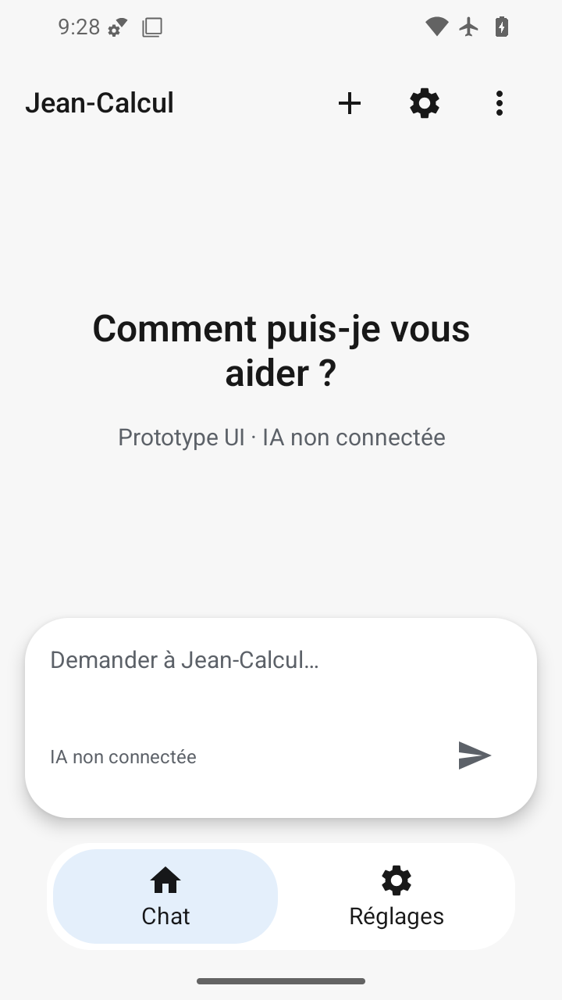
360×640 dp : titre sur deux lignes, champ avec indication et navigation visibles sans chevauchement.
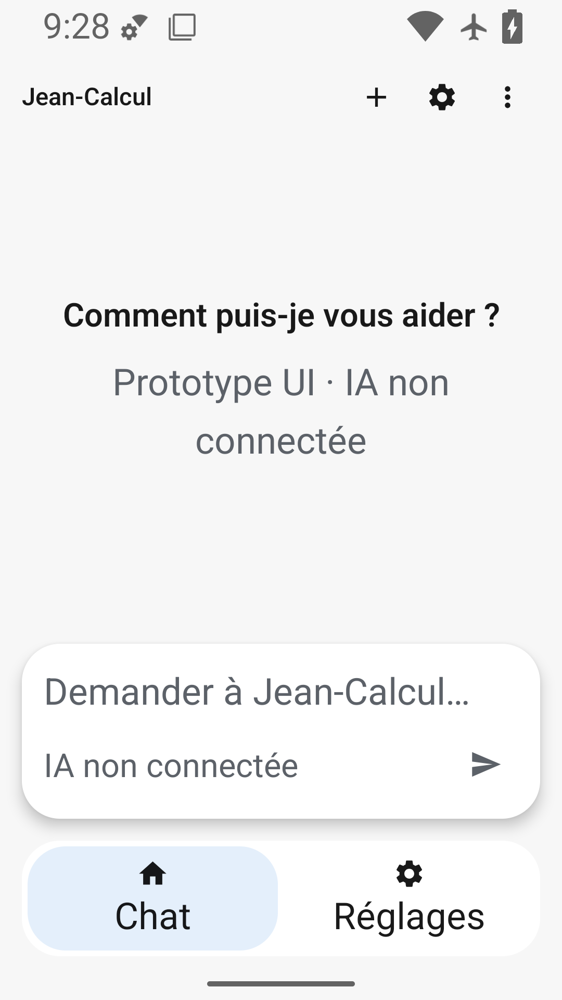
Police 200 % : texte et onglets agrandis sans coupure, action d’envoi accessible ; titres fixes COUI documentés.
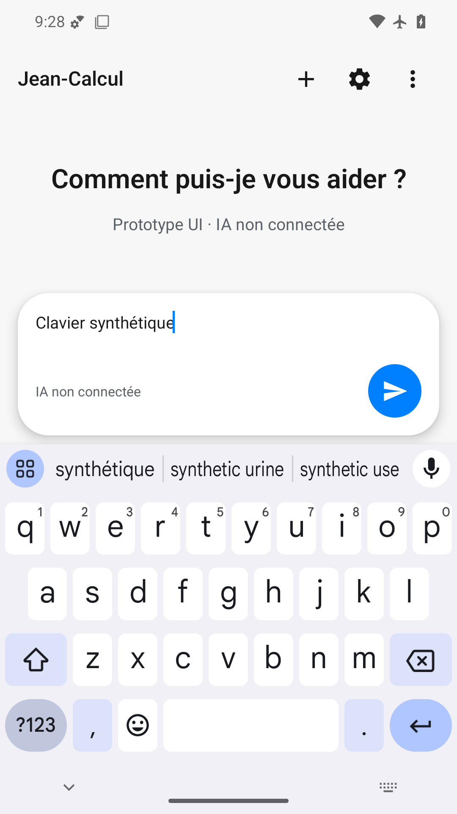
Saisie et envoi au-dessus du clavier mais en-tête et ses actions masqués, malgré des coordonnées sémantiques inchangées.
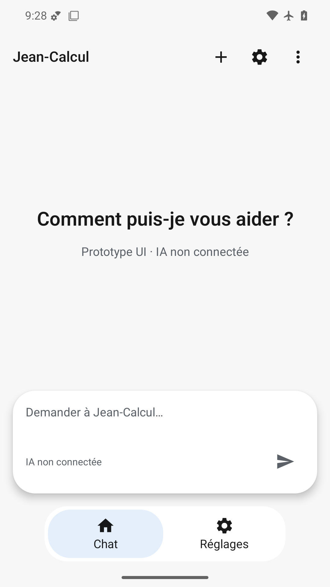
Rendu final lisible, indication de saisie et navigation présentes ; pas de preuve de fluidité physique.
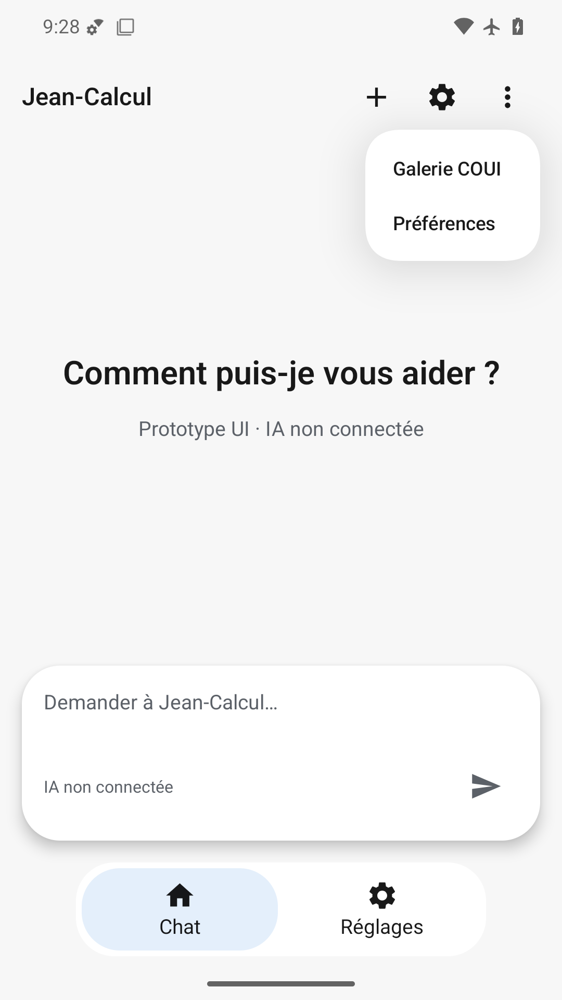
Menu natif et arrière-plan lisibles, deux entrées accessibles, navigation et en-tête complets.
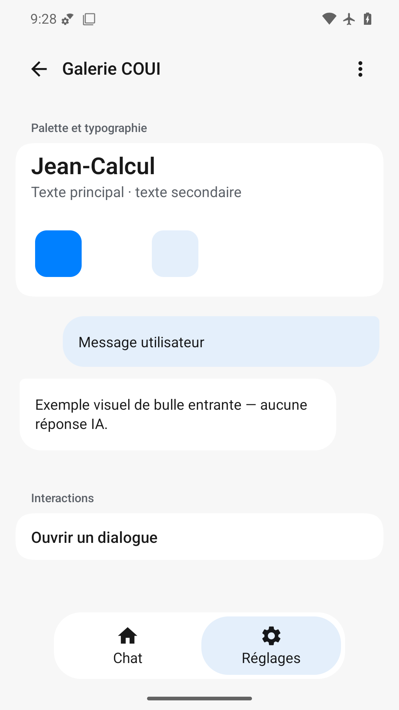
Textes, bulles illustratives et navigation complets ; blanc de la palette peu distinct sur blanc.
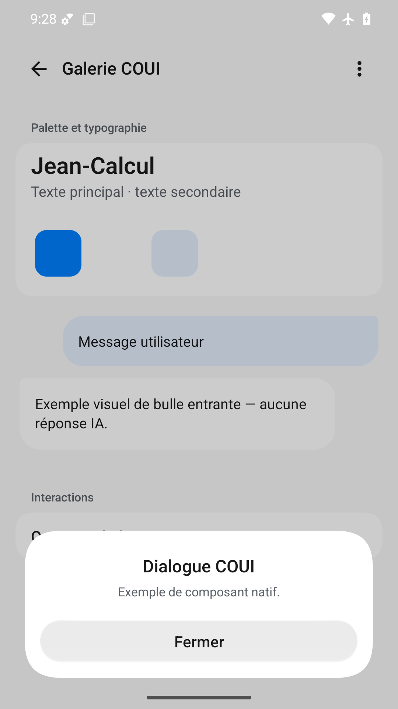
Titre, description et Fermer lisibles avec marge système ; fond correctement assombri.
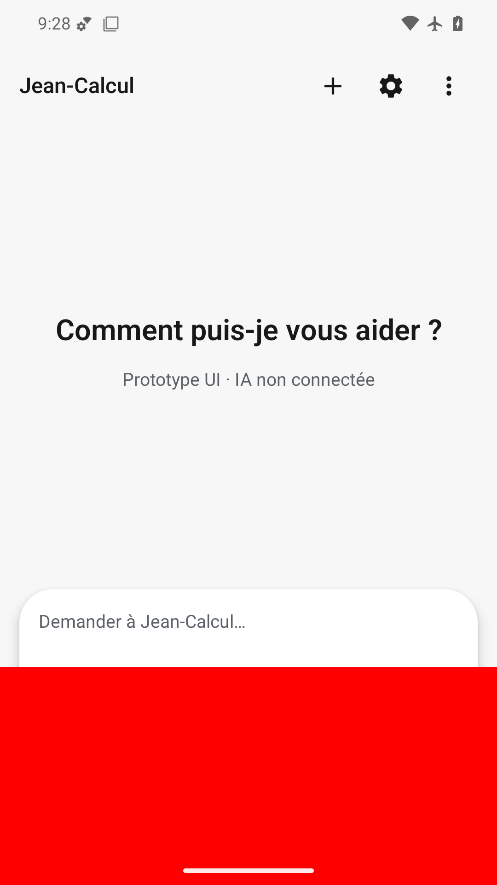
Surcouche rouge basse masque navigation et Envoyer, défaut volontaire détecté.